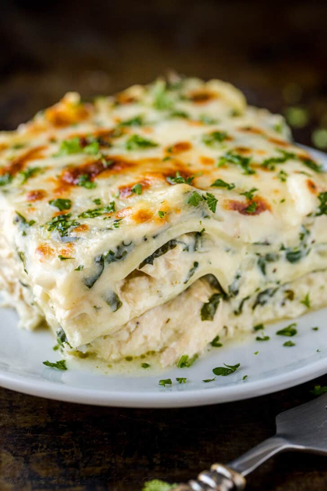

Lasagna

Description
This recipe is not the usual lasagna recipe.
This recipe is an alternative version
for people that are looking for a tomato-less
version of the classic lasagna.
This recipe resembles more of a Mousaka, which
is a lasagna like recipe from greece that uses
vegetables for layers, instead of pasta. It's worth
trying out if you feel adventurous.
Ingredients
- Milk
- Flour
- Chicken
- Bay Leaf
- Parsley
- Lasagna Pasta
- Onion
- Garlic
- Mozzarella
- Parmesan
- Eggs
- Ricotta
Steps
- Start by putting a pot of water to boil
in order to put the lasagna pasta in,
put some salt in the water.
- Finely cut onion and garlic.
- Put the onion and garlic on a hot pan with
olive oil and cook for 2 minutes or until
onion is tender.
- Throw a pad of butter in the pan and let it melt.
- Add flour to the pan and mix well with the butter.
- Start adding milk and stir well to avoid lumps.
- Add bay leaf, salt and pepper to the sauce.
- Check for taste, if it's to your liking, remove
from heat and let cool.
- Once the water for the pasta starts to boil,
add the pasta and stir for 2 minutes so it doesn't
stick together.
- Let pasta cook in water for 8 minutes.
- Remove pasta from water and cool under running
water until room temperature.